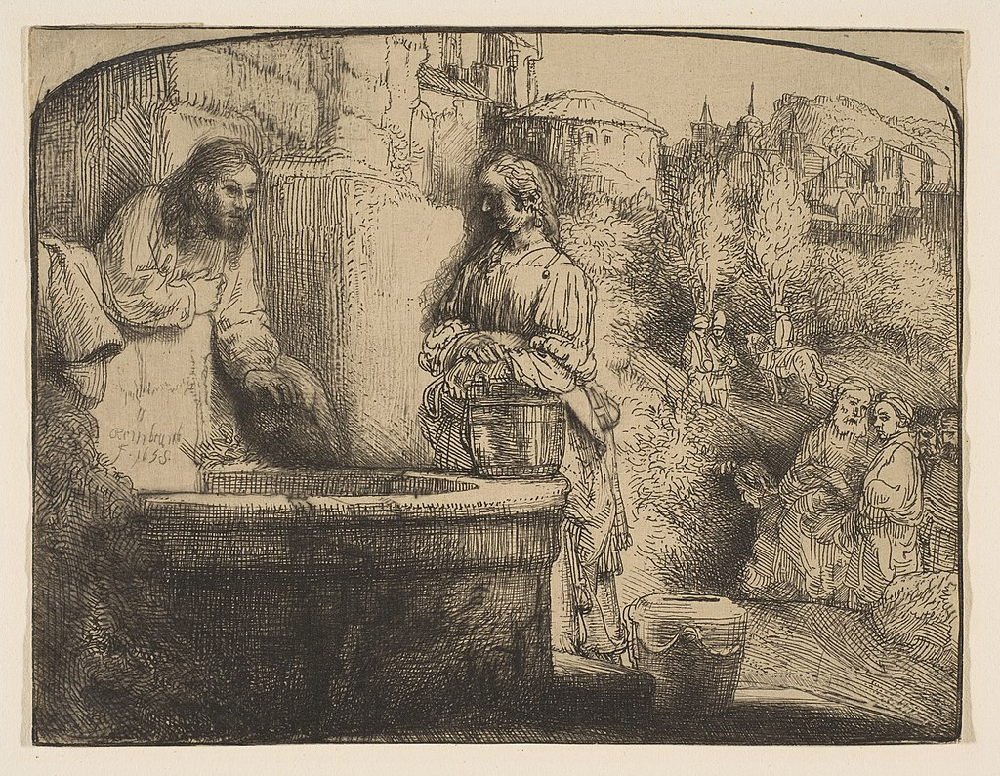

<head>
<meta charset="UTF-8" />
<meta name="keywords" content="drawing, painting" />
<meta name="description" content="drawings by Sunjy" />
<title>Sunjy</title>
<link rel="shortcut icon" type="image/x-icon" href="../../mImages/mCommon/favicon.ico" media="screen" />
<link rel="stylesheet" type="text/css" href="../../mCsses/mCommon/mCssA.css" />
<link rel="stylesheet" type="text/css" href="../../mCsses/mCommon/mCssB.css" />
<link rel="stylesheet" type="text/css" href="../../mCsses/mCommon/mCssC.css" />
<link rel="stylesheet" type="text/css" href="../../mCsses/mCommon/mCssD.css" />
<link rel="stylesheet" type="text/css" href="../../mCsses/mContent/mCssA.css" />
<link rel="stylesheet" type="text/css" href="../../mCsses/mContent/mCssB.css" />
<link rel="stylesheet" type="text/css" href="../../mCsses/mContent/mCssC.css" />
<link rel="stylesheet" type="text/css" href="../../mCsses/mContent/mCssD.css" />
</head>
<script type="text/javascript" src="../../mScripts/mContent/mContentAA.js" /></script>
<script type="text/javascript" src="../../mScripts/mContent/mContentAB.js" /></script>
<script type="text/javascript" src="../../mScripts/mContent/mContentAC.js" /></script>
<script type="text/javascript" src="../../mScripts/mContent/mContentAD.js" /></script>
<script type="text/javascript"></script> 
<script type="text/javascript">
document.write('<div class="mImgAbsolute"></div>');
/*
document.write('<p class="mFontSizeBColor" />From a white paper...</p>');
document.write('<table class="center"><tr><td>');
document.write('');
document.write('</td></tr></table>');
*/
</script>


<script type="text/javascript">
document.write('<p class="mFontSizeBColor" />Christ and the Woman of Samaria</p>');
document.write('<p class="mFontSizeSColor" />“Christ and the Woman of Samaria” by Rembrandt depicts a scene of an old Bible tale from the New Testament. The Samaritan woman at the well is a figure from the Gospel of John. In Eastern Christian traditions, she is venerated as a saint with the name Photine meaning “the luminous one.”<br><br>According to the biblical account, Jesus was traveling through Samaria; when he came to a well and tired from his journey, he sat by the well.<br><br>His disciples had gone ahead to the nearby city to buy food. At noon a Samaritan woman came to draw water, and Jesus said to her, “Give me a drink.”<br><br>She expressed her surprise that a Jew would speak to a Samaritan. Jesus replied: “Everyone who drinks of this water will thirst again, but whoever drinks of the water that I shall give him will never thirst.”<br><br>Rembrandt depicts this encounter as the woman struggles to understand Christ’s message. This episode has been seen to symbolize the conversion of gentiles by Christ.<br><br>In Eastern Christian tradition, this woman was quick to spread the news of her meeting with Jesus. Through her witness, many came to believe in him.<br><br>Her continuing witness eventually brought her to the attention of Emperor Nero, and she was taken before him to answer for her faith. Tradition has it that she suffered many tortures and died a martyr after being thrown down a dry well.<br></p>');
document.write('<table class="center" /><tr><td>');
document.write('<br>According to the biblical account, Jesus was traveling through Samaria; when he came to a well and tired from his journey, he sat by the well.<br><br>His disciples had gone ahead to the nearby city to buy food. At noon a Samaritan woman came to draw water, and Jesus said to her, “Give me a drink.”<br><br>She expressed her surprise that a Jew would speak to a Samaritan. Jesus replied: “Everyone who drinks of this water will thirst again, but whoever drinks of the water that I shall give him will never thirst.”<br><br>Rembrandt depicts this encounter as the woman struggles to understand Christ’s message. This episode has been seen to symbolize the conversion of gentiles by Christ.<br><br>In Eastern Christian tradition, this woman was quick to spread the news of her meeting with Jesus. Through her witness, many came to believe in him.<br><br>Her continuing witness eventually brought her to the attention of Emperor Nero, and she was taken before him to answer for her faith. Tradition has it that she suffered many tortures and died a martyr after being thrown down a dry well.<br>" />');
document.write('</td></tr></table>');
</script>


